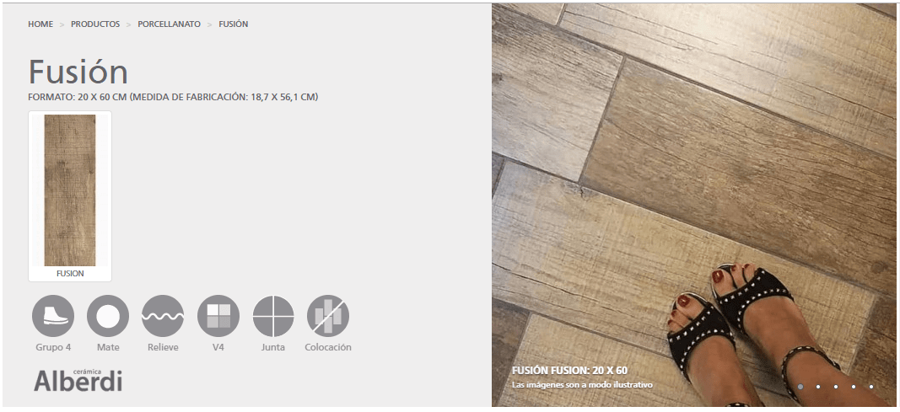
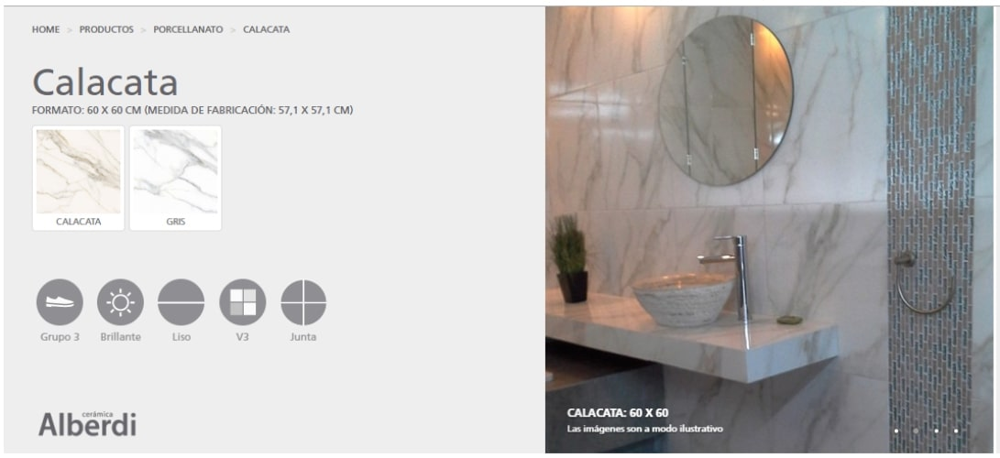
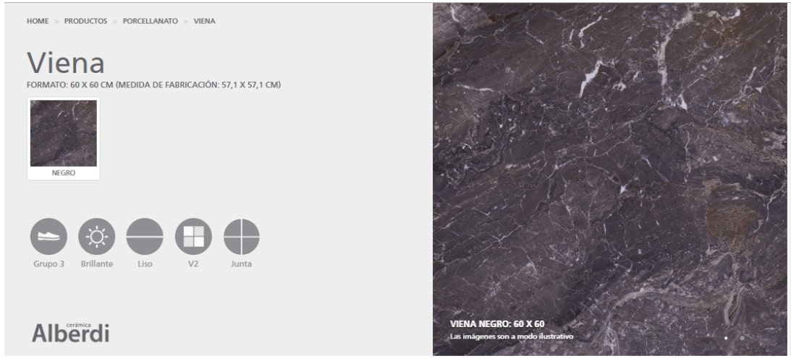
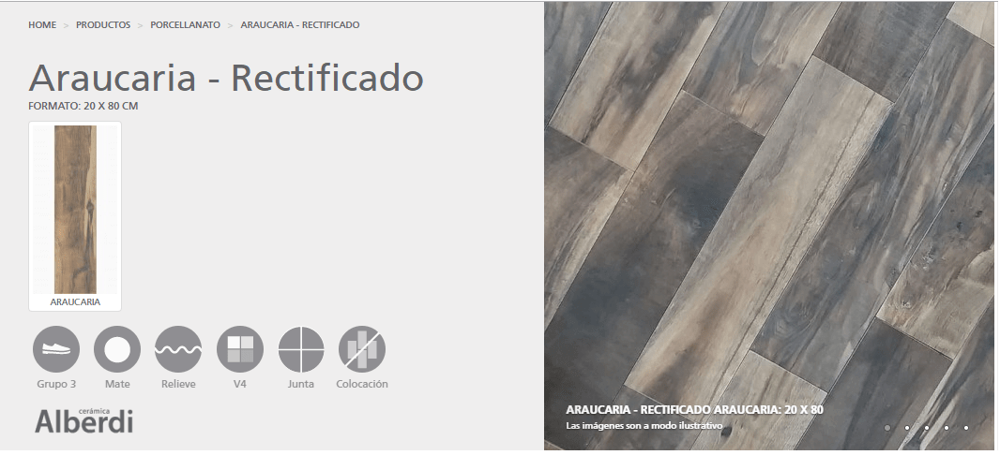
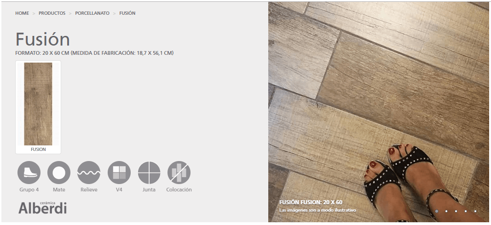
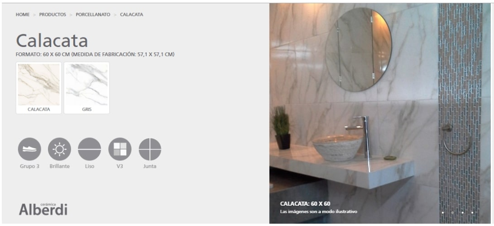
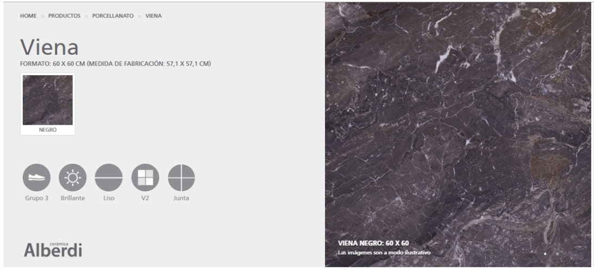
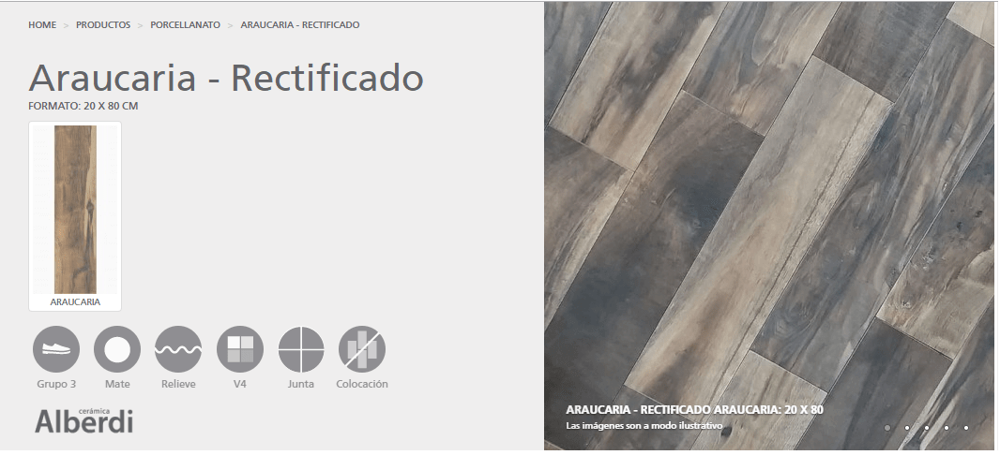

¡Elegí tu piso soñado!
La elección de un piso es una cuestión de inspiración y personalidad, por eso en Ceramicas Arcoiris contamos con una gran variedad de estilos que nos permitan cumplir con las expectativas de nuestros clientes.
 






